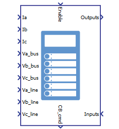
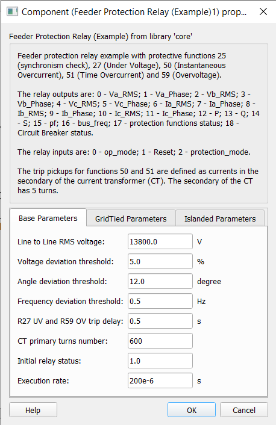
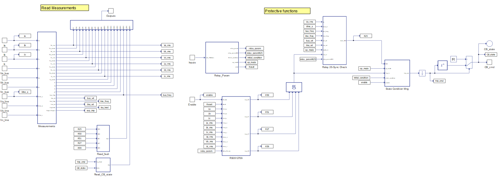
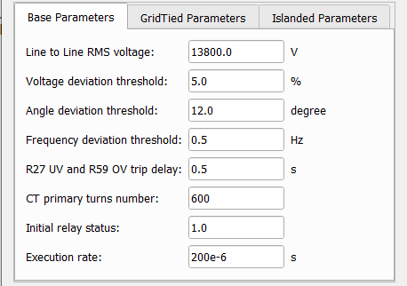
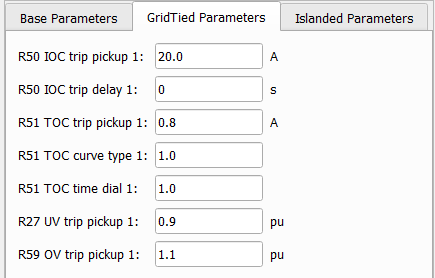
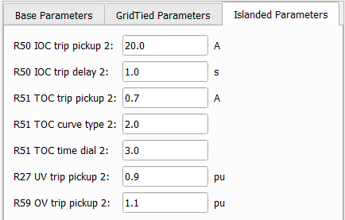

Feeder protection relay (example)
Description of the feeder protection relay (example) component with implemented ANSI protective functions.
- 25 - synchronism check (reconnection)
- 27 - undervoltage (trip)
- 50 - instantaneous overcurrent (trip)
- 51 - inverse time overcurrent (trip)
- 59 - overvoltage (trip)
| component | component dialog window | component parameters |
|---|---|---|
 Feeder Protection Relay (example) |
 |
|
Inputs and outputs

- Enable - single input
- Voltage and current measurements - one input per measurement
- Control/communications - single array input
Table 2 and Table 3 describe the inputs in more details.
| Input | Description |
|---|---|
| Enable | Digital input that turns on/off the relay. The relay is operating when input is high. |
| Ia | Analog input with the measurement of the current that goes through the circuit breaker on phase A [A] |
| Ib | Analog input with the measurement of the current that goes through the circuit breaker on phase B [A] |
| Ic | Analog input with the measurement of the current that goes through the circuit breaker on phase C [A] |
| Va_bus | Analog input with the measurement of the voltage of the bus (upstream) side on phase A [V] |
| Vb_bus | Analog input with the measurement of the voltage of the bus (upstream) side on phase B [V] |
| Vc_bus | Analog input with the measurement of the voltage of the bus (upstream) side on phase C [V] |
| Va_line | Analog input with the measurement of the voltage of the line (downstream) side on phase A [V] |
| Vb_line | Analog input with the measurement of the voltage of the line (downstream) side on phase B [V] |
| Vc_line | Analog input with the measurement of the voltage of the line (downstream) side on phase C [V] |
The number of control/communication inputs is 3 and they must be sent as an array, with use of a Bus Join component, and in the correct order. Table 3 describe the inputs and their order.
| Number | Output | Description |
|---|---|---|
| 0 | op_mode | Three-level input that defines the relay operation mode:
|
| 1 | Reset | Digital input that resets the relay at every signal level change. |
| 2 | protect_mode | Digital input that defines the relay parameters according to the protection mode:
|
The feeder protection relay (example) component has two categories of outputs. They are:
- Control - single output
- Measurements - single array output
Table 4 and Table 5 describe the outputs in more details.
| Output | Description |
|---|---|
| CB_cmd | Digital output that commands the circuit breaker (contactor component). The circuit breaker must close when this output is high. |
The number of measurement outputs is 19. They are organized as an array and can be accessed individually through a Bus Split component, respecting the correct order. Table 5 describes the outputs and their order.
| Number | Output | Description |
|---|---|---|
| 0 | Va_RMS | RMS bus voltage measurement of the relay phase A [V] |
| 1 | Va_Phase | Phase measurement of the bus voltage on phase A [degrees]. This is the reference for angle measurements, thus this output is zero. |
| 2 | Vb_RMS | RMS bus voltage measurement of the relay phase B [V] |
| 3 | Vb_Phase | Phase measurement of the bus voltage on phase B when compared to the bus voltage on phase A [degrees] |
| 4 | Vc_RMS | RMS bus voltage measurement of the relay phase C [V] |
| 5 | Vc_Phase | Phase measurement of the bus voltage on phase C when compared to the bus voltage on phase A [degrees] |
| 6 | Ia_RMS | RMS current measurement of the relay phase A [V] |
| 7 | Ia_Phase | Phase measurement of the current on phase A when compared to the bus voltage on phase A [degrees] |
| 8 | Ib_RMS | RMS current measurement of the relay phase B [V] |
| 9 | Ib_Phase | Phase measurement of the current on phase A when compared to the bus voltage on phase A [degrees] |
| 10 | Ic_RMS | RMS current measurement of the relay phase C [V] |
| 11 | Ic_Phase | Phase measurement of the current on phase C when compared to the bus voltage on phase A [degrees] |
| 12 | P | Analog output with the measurement of the active power flow across the relay [W] |
| 13 | Q | Analog output with the measurement of the reactive power flow across the relay [VAr] |
| 14 | S | Analog output with the measurement of the apparent power flow across the relay [VA] |
| 15 | pf | Analog output with the measurement of the power factor across the relay. |
| 16 | bus_freq | Analog output with the electrical frequency measurement of the relay's bus side |
| 17 | Protection function status | Analog output with the protective function status feedback. This output, if converted
to base two (5 bits), will indicate the status of the functions in the following
order (most to least significant bit):
|
| 18 | Circuit Breaker status | Analog output with circuit breaker status feedback. This output, if converted to base
two (3 bits), will indicate the statuses in the following order (most to least
significant bit):
|
Component dialogue box and parameters
The feeder protection relay (example) component dialogue box consists of three tabs for specifying basic parameters.
Tab: "Base Parameters"
In this component tab, base parameters of the feeder protection relay (example) component can be specified.

| Parameter | Code name | Description |
|---|---|---|
| Line to Line RMS voltage | VRMSLL | Nominal line to line RMS voltage of the relay [V] |
| Voltage deviation threshold | dV_threshold | Accepted difference of the voltages on each side of the circuit breaker when compared to a percentage of the nominal voltage [%] |
| Angle deviation threshold | angle_threshold | Accepted phase difference between the voltages on each side of the contactor [degrees] |
| Frequency deviation threshold | dF_threshold | Accepted frequency difference between voltages on each side of the contactor [Hz] |
| R27 UV and R59 OV trip delay | R27P_R59P_tripDelay | Time delay to trip when of the occurrence of under voltage (R27) or overvoltage (R59) [s] |
| CT primary turns number | CT_primary | Number of turns of the primary winding of the current transformer |
| Initial relay status | Initial_status | Digital parameter that sets the circuit breaker initial state. The circuit breaker is closed when the parameter is high. |
| Execution rate | Ts | Execution rate of all signal processing components of the feeder protection relay [s] |
Tab: "GridTied Parameters"
In this component tab, the user can specify grid tied parameters of the feeder protection relay (example) component.

| Parameter | Code name | Description |
|---|---|---|
| R50 IOC trip pickup 1 | R50P_pickup1 | Current threshold that triggers the instantaneous overcurrent protection when in grid tied mode [A]. The current is referred to the secondary side of the current transformer. The number of turns on the secondary winding is 5. |
| R50 IOC trip delay 1 | R50P_tripDelay1 | Time delay to trip by instantaneous over current protection when in grid tied mode [s] |
| R51 TOC trip pickup 1 | R51P_pickup1 | Current threshold that triggers the inverse time overcurrent protection when in grid tied mode [A]. The current is referred to the secondary side of the current transformer. The number of turns on the secondary winding is 5. |
| R51 TOC curve type 1 | R51P_curveType1 | A four-level parameter that defines which trip curve type to use with the inverse
time overcurrent protection when in grid tied mode. For the following inputs, the
curve parameters are:
|
| R51 TOC time dial 1 | R51P_curveType1 | Time dial to be used in the calculation of the trip curve for the inverse time overcurrent protection when in grid tied mode |
| R27 UV trip pickup 1 | R27P_pickup1 | Voltage threshold that triggers the under voltage protection when in grid tied mode [p.u.] |
| R59 OV trip pickup 1 | R59P_pickup1 | Voltage threshold that triggers the overvoltage protection when in grid tied mode [p.u.] |
Tab: "Islanded Parameters"
In this component tab, islanded parameters of the feeder protection relay (example) component can be specified.

| Parameter | Code name | Description |
|---|---|---|
| R50 IOC trip pickup 2 | R50P_pickup2 | Current threshold that triggers the instantaneous overcurrent protection when in islanded mode [A]. The current is referred to the secondary side of the current transformer. The number of turns on the secondary winding is 5. |
| R50 IOC trip delay 2 | R50P_tripDelay2 | Time delay to trip by instantaneous over current protection when in islanded mode [s] |
| R51 TOC trip pickup 2 | R51P_pickup2 | Current threshold that triggers the inverse time overcurrent protection when in islanded mode [A]. The current is referred to the secondary side of the current transformer. The number of turns on the secondary winding is 5. |
| R51 TOC curve type 2 | R51P_curveType2 | A four-level parameter that defines which trip curve type to use with the inverse
time overcurrent protection when in islanded mode. For the following inputs, the
curve parameters are:
|
| R51 TOC time dial 2 | R51P_curveType2 | A time dial to be used in the calculation of the trip curve for the inverse time overcurrent protection when in islanded mode. |
| R27 UV trip pickup 2 | R27P_pickup2 | Voltage threshold that triggers the under voltage protection when in islanded mode [p.u.] |
| R59 OV trip pickup 2 | R59P_pickup2 | Voltage threshold that triggers the overvoltage protection when in islanded mode [p.u.] |
The inverse time overcurrent trip curve is defined by:
- tripTime is the time delay to trip by the inverse time over current protection.
- M is the ratio between the measured current and the current threshold.
- timeDial, A, B and P are parameters defined by the mask.
Example
Overall behavior and control methodologies can be better understood with the use of the following feeder protection relay example:
Model name: feeder_protection_relay.tse
SCADA interface: SCADA_Panel.cus
Path: /examples/models/microgrid/feeder_protection_relay/